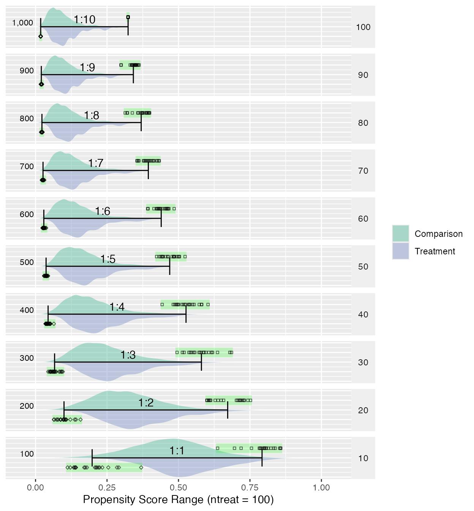

Shrinking Fitted Values from Logistic Regression
Source:vignettes/shrinking_fitted_values.Rmd
shrinking_fitted_values.RmdNote: This is adapted from chapter 5 of my dissertation which is available at https://github.com/jbryer/Dissertation for the full context.
With regard to propensity score ranges, the range tends to shrink as the ratio of treatment-to-control increases. Figure 20 depicts the range and distribution of propensity scores (using logistic regression) with varying treatment-to-control ratios. The data used to create this figure is simulated and available in Appendix K. The psrange and plot.psrange functions are included in the multilevelPSA R package. Propensity scores are estimated with a single covariate where the mean for the treatment and control are 0.6 and 0.4, respectively. The standard deviation for both is 0.4. There are 100 treatment units and 1,000 control units simulated. The goal in choosing these means and standard deviations is to have some separation between treatment and control. Each row in the figure represents the percentage of control units sampled before estimating the propensity scores, starting with 100% (i.e. all 1,000 control units) to 10% (100 of the control units). As the figure shows, as the ratio decreases to where there are equal treatment and control units, the range of the propensity scores becomes more normal. To calculate the ranges, each sampling step is bootstrapped so the green bar and black points represent each of the 20 bootstrap samples taken. The bars then represent the mean of the minimum and mean of the maximum for each step.
The “shrinking” of propensity score ranges as the ratio of treatment-to-control increases has implications for the interpretation of propensity scores. Typically, propensity scores are interpreted as the probability of being in the treatment. For studies where the number of treatment and control units are roughly equal, this interpretation is valid. However, in cases where the ratio of treatment-to-control is large, it best to simply interpret the propensity scores as adjustment scores and not probabilities. Since the matching and stratification procedures utilize standard scores (i.e. the propensity score divided by the standard deviation of the propensity scores), should only impact interpretation of the propensity scores and should not impact on the estimated treatment effects. It appears this issue has not been explored in either the PSA or logistic regression literature and additional exploration of the topic appears to be warranted.
getSimulatedData <- function(nvars=3,
ntreat=100, treat.mean=.6, treat.sd=.5,
ncontrol=1000, control.mean=.4, control.sd=.5) {
if(length(treat.mean) == 1) { treat.mean = rep(treat.mean, nvars) }
if(length(treat.sd) == 1) { treat.sd = rep(treat.sd, nvars) }
if(length(control.mean) == 1) { control.mean = rep(control.mean, nvars) }
if(length(control.sd) == 1) { control.sd = rep(control.sd, nvars) }
df <- c(rep(0, ncontrol), rep(1, ntreat))
for(i in 1:nvars) {
df <- cbind(df, c(rnorm(ncontrol, mean=control.mean[i], sd=control.sd[i]),
rnorm(ntreat, mean=treat.mean[i], sd=treat.sd[i])))
}
df <- as.data.frame(df)
names(df) <- c('treat', letters[1:nvars])
return(df)
}
test.df2 <- getSimulatedData(
treat.mean=.6, control.mean=.4)The multilevelPSA::psrange function will sample with
varying ratios from 1:10 to 1:1. It takes multiple samples and averages
the ranges and distributions of the fitted values from logistic
regression.
In the figure below propensity score ranges (i.e. fitted values from a logistic regression) for varying treatment-to-control ratios. For each panel, 20 random samples of control units were selected ranging from 100 (10% of total available) to 1,000 (100% of total available). For each sample propensity scores are estimated using logistic regression. The black bar represents the range from the median of the minimum and maximum propensity scores. The points for all minimum and maximum values for all samples are represented by the points. Additionally, density distributions of the propensity scores for treatment and comparison groups are provided below and above the line, respectively. As the ratio of treatment-to-control increases, the range of propensity scores (i.e. fitted values from logistic regression) shrinks.
plot(psranges2)